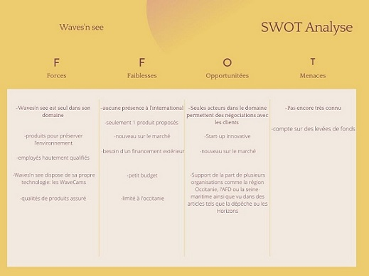
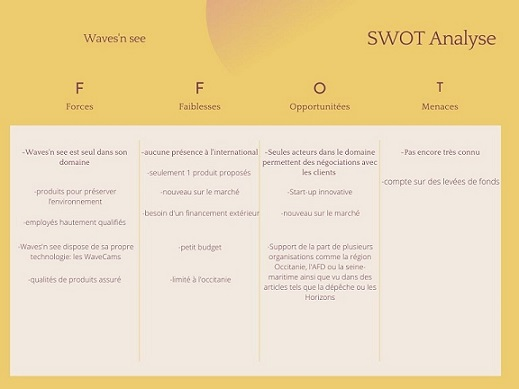

Waves’n see est une société coopérative locale Française crée en 2015 située à Toulouse à but lucratif et environnemental leur activité consiste à utiliser leurs technologies pour assurer le bon entretient, le suivi en temps réel du littoral et sa sauvegarde dû à l’érosion naturelle.
C’est une très petite entreprise SCOP du secteur tertiaire composées de 6 personnes avec un capital social de 1000 € en 2015 qui est divisé entre chaque membre .
Waves’n see est une SCOP créée en 2015 qui veut apporter une protection de nos espaces balnéaires, ainsi que de nos côtes face à l’érosion créée par les vagues et le temps, car même si l’érosion est un phénomène naturelle elle est problématique pour la population ainsi que la ville elle même en effet cela peut créer des instabilités au niveaux des fondations, des routes, des tuyaux, cela pausse aussi un problème pour le tourisme si la plage est ravalée il y auras moins de touristes et donc moins d’argent dans les caisses de la ville. Il est estimé que 20% des côtes sont sableuses et déjà 70% de ces côtes ont été érodées sur le long terme les côtes rocheuses aussi sont érodés et cela finira inévitablement par créer des problèmes.
L’idée principale est d’utiliser une technologie qui est propre à waves’n see la «WaveCam®» qui permet de faire du videomonitoring en live et en continue, le vidéomonitoring permet de saisir la complexité de la dynamique des échanges hydrosédimentaires, à partir d’un unique instrument, grâce à : Un suivi local, à l’échelle de la plage, Un suivi haute fréquence, pour saisir les phénomènes à dynamique rapide, caractéristiques de la zone littorale, Un suivi complet de la dynamique littorale, du haut de plage jusqu’aux petits fonds. Les WaveCams enregistre et envoie leurs données directement aux serveurs de Waves’n see ou les données seront traités automatiquement, les données traités seront ensuite analysé par leur experts océanographe permettant d’établir les problèmes, leurs solutions et les besoins. Ces données permettent de faire des prévisions aussi bien à cour terme qu’à long terme.
L’activité de Waves’n est d’installersur les plages et les côtes leur système de WaveCam, les WaveCams enregistre et envoie leurs données directement aux serveurs de Waves’n see ou les données seront traités automatiquement, les données traités seront ensuite analysé par leur experts océanographe permettant d’établir les problèmes, leurs solutions et les besoins. Ces données permettent de faire des prévisions aussi bien à cour terme qu’à long terme. Cela seras très utiles pour leurs parties prenantes c’est à dire : leurs clients les villes qui en adoptant cette solution pourra sauvegarder son environnement et son patrimoine culturelle ainsi qu’aider les villes à économiser en gardant le tourisme haut et avoir moins besoins à des recours comme faire venir des camions de sable pour rétablir la plage et les propriétaires ayant du terrain proche des côtes risquant des dégàts.
Le service proposé par Waves’n see est une aide au confort, à l’écologie et aux économies en permettant aux villes de garder les touristes et les habitants heureux tout en sauvegardant son patrimoine culturelle et aux propriétaire de terrain proche de côtes potentiellement en danger une protection.
Leurs principales dépenses proviennent de l’équipement dont ils ont besoins pour équiper les plages ainsi que de garder des serveurs dédié ouvert pour pouvoir garder les données des plages à vérifier ainsi que leurs prédictions.
Leur principal revenues leur vient de leur clients en vendant leur système aux villes ou propriétaire terrien ainsi que les levée de fonds solidaires et aides du bip.
Leurs type de modèle économique est: L’abonnement permet de générer des revenus réguliers en fidélisant automatiquement sa clientèle. Waves’n see ont des abonnements pour pouvoir observer et partager les données après l’installation des wavecams. L’entreprise pourra se concentrer d’une part sur le contenu du produit et d’autre part sur le démarchage pour accroître le nombre de ses abonnés fidèles.
Leur principale et unique activité est : La surveillance de l’érosion des côtes maritimes et l’aide au clients pour les différentes possibilités d’entretien tel que le re-ensablement des plages, les constructions de fondations près de falaises, la sûreté des fondations pré-existante ect… .
 

Stratégie business et corporate : La stratégie business de waves’n see est une stratégie de concentration c’est à dire qu’ils occupent une niche sans concurrent pour s’approprier le plus de parts du marché. La stratégie corporate est celle de la spécialisation c’est à dire de se concentrer sur leur principal domaine d’activité et y investir une très grande partie ou toutes les ressources. Exemples de moyens de mise en œuvre : L’exemple de concentration pour waves’n see est le fait qu’ils sont la seule start-up et entreprise dans ce domaine en occitanie et donc les seuls que l’on peut contacter pour ce genre de services. L’exemple de spécialisation est montré par la tecnhologie de waves’n see les WaveCams ainsi que leurs surveillance et traitement des données récoltés par les WavesCams